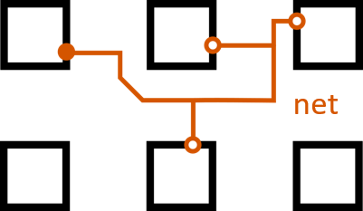

toggle TOC (ctrl + ⇔)
Over the summer of 2015 and under the supervision of Professor Vaughn Betz, I worked on the router for VPR - a packing, placement, and routing CAD tool for FPGAs. It is one part of the verilog-to-routing (VTR) toolchain. My work was specifically on optimizing the router for large circuits, as that was the run-time bottleneck.
My biggest contribution was the development of incremental rerouting through route tree pruning:
Poster summary of results
(2nd place in ECE poster category for UnERD 2015)
Additionally, I developed a quality of results (QoR) and benchmarks tracking toolchain called benchtracker:
Field Programmable Gate Arrays (FPGAs) are basically reprogrammable hardware that can become any circuit "in the field" after it has been manufactured. It accomplishes this through its organization into arrays of logic blocks: self contained collections of lookup tables and flip flops that can preform basic functions, and channels that allow an extremely high degree of versatility in number of unique configurations. The number of wires in each channel is termed its channel width.
Although not as efficient as application specific integrated circuits (ASIC) for performing any specific task, FPGAs can be mass produced with very little investment risk and is still fast enough to enable many real-time accelerations. Applications of FPGAs mainly lie in communication infrastructure (cell phone towers and internet routers) and in accelerating data centers, such as Microsoft's project Catapult and Intel's planned incorporation of FPGAs into its server-targetted Xeon chips.
The greatest difficulty in working with FPGAs is often not designing or manufacturing the chip itself, but enabling developers and users to convert their description of circuits into physical circuits on the FPGA.
This is the job of CAD tools, which must:
The routing stage will be the one under focus, as it is the most difficult task with the largest problem space. Each electrical signal, a net, starts from some logic block (the source), and must use one of the block's output pins to reach one or more other logic blocks (the sinks) through one of their input pins. The distinction between source and output pin and sink and input pin is made because often many pins are logically equivalent, but the signal must travel through only one of them. The number of sinks a net has is called its fanout. A path from a source to a specific sink is called a connection.
The problem is when two nets want to pass through the same wire. This is electrically impossible, as two signals cannot exist on the same conductor at one time (it cannot be both 1 and 0), causing what is called congestion. The router must make the fastest circuit possible by keeping connections short while eliminating congestion.
The problem of creating rectilinear steiner trees is NP-complete (Garey, Johnson 1976). That is the continuous version of routing a single net. Since the FPGA router must use existing resources (pins and wires are placed already), the problem becomes discrete and harder to solve. On top of that, many nets must be all routed.
Due to this difficulty, a heuristics approach is required to complete routing in a finite amount of time. Pathfinder is the high level algorithm used, which iteratively tries to eliminate congestion by evolving the cost of each resource based on their past usage. The concept of criticality is how close a connection is to being the slowest connection in the circuit (and thus the speed that the rest of the circuit must run at).
VPR is a research oriented FPGA CAD tool that, unlike commercial tools, can map any kind of circuit to any kind of architecture. In that sense, it is crucial for researching new FPGA architectures.
One key obstacle to VPR's usefulness is the run-time bottleneck from the routing stage. This prevents VPR from being used on large, realistic circuits, which only tend to get bigger and more complex as time goes on.
To tackle this problem, I first profiled the router over various circuits to determine the cause of the long route time.
Through profiling over many different benchmarks and visualizing the results (with some python scripts and the help of matplotlib), several trends emerged that directed my search for a solution.
The first clue was the time spent on nets of various fanouts. The following pie chart shows the distribution for a circuit representative of the ones difficult to route.
Time spent on nets of each fanout
The parallel pie chart of the number of nets of each fanout is not shown since the high fanout nets accounted for less than 0.1% of them. This disproportionate amount of time spent motivates a focus on high fanout nets.
Another clue is the time per iteration for different difficulties of routing. I expected the profile for a easy to route circuits to look different than one that was difficult to route.
For an easy to route circuit (low stress), the time is monotonically decreasing. We spend the most amount of time in the first iteration to find the fastest possible routing, and have an easy time resolving congestion. However, for those that are difficult to route and thus take a long time, most of the time is spent resolving congestion in the middle iterations. This suggests considering how to reduce the amount of congestion generated in order to provide a speedup.
Combining the focus on high fanout nets and congestion, I hypothesized that the difficulty with high fanout nets was due to the instability of their routing. Because of their large size, it was much more likely that one of the wires in its choices is illegal. However, each source-to-sink connection has an equal amount of probability for being congested, controlling for criticality (more critical connections are given priority and are less likely to be congested).
What this translates to is that for any iteration, high fanout nets likely have legal connections to a large number of sinks, but gets rerouted anyway due to a small number of congested connections. Rerouting the net entirely gives each connection an equal probability of being legal (again controlling for criticality), which is higher than the last iteration because the Pathfinder algorithm updated congestion to be more expensive.
In equation terms, if i is the iteration,
n the fanout of the net, p the probability of a connection
being legal, and f the factor that p increases by each iteration, then the chance
of a net being legal is
P = (p*f^i)^n
The term (p*f^i) will always be smaller or equal to 1, so taking
it to the nth power can only make it smaller. From this equation it becomes
intuitive why a large amount of time is spent resolving the congestion for
high fanout nets.
I think we can do better. The most significant improvements will come from reducing the nth power term, in essence reducing the size of the net to be routed.
The idea of rerouting only the illegal connections comes naturally from this approach, but there are some dangers of applying this carelessly.
The biggest danger in routing only illegal connections is settling for local minima.
In terms of results, this manifest in lower quality circuits produced (greater critical path delay), and reduced routability. While the problem space shrinks from iteration to iteration, the solution space also shrinks since there are less legal wires to choose from. The circuit essentially calcifies and we are no longer guaranteed to complete routing. This is due to the impossibility of knowing which connection could best use a certain resource until the last iteration. By rerouting only the illegal connections, we assume our first guess is correct.
The solution to those dangers is to somehow shrink the problem space while keeping the solution space the same size. The technique in the next section details how this can be done.
The conceptual basis for how to smartly reroute is first explained. A net can be viewed as a tree with the source as the root and the sinks as the leaves. Connections are the unique path from the root to the sink, and may be in its own branch or share physical resources (nodes) with another connection of the same net. Each iteration produces a route tree for each net, regardless of it being legal or not. The pathfinder algorithm stops when all such trees are legal.
What's currently done is if a tree was found to be illegal in any way, it would be chopped down and regrown from the root. Due to the logical equivalence of output pins, this can cause oscillatory behaviour in jumping between the choice of several output pins.
Instead of chopping the tree, at the start of each iteration, we can examine the route tree from the previous iteration and prune it by cutting off branches that don't legally lead to a sink. The key detail to not calcifying and reducing our solution space is to allow non-congested nets to become congested if another net deems it needs a node more than the previous one.
incremental rerouting through pruning the route tree has 2 main benefits:
Pruning can be further improved when it is selectively done. The basic selection would be to only prune route trees of nets that are beyond a certain fanout. This is referred to as the pruning threshold below, and results show that setting a reasonable threshold (around 32 to 64, depending on circuit size) improves stability and avoidance of local minima. As we'll see below, rerouting every net can lead to calcification and settling for local minima, resulting in poor results.
Data collection is still an on-going process, but current tests uniformly supports the fact that incremental rerouting through pruning results in substantial speedups, particularly for large circuits, without a degredation in routability and quality.
Something interesting from the previous figure is that incremental rerouting changes the shape of the time per iteration profile to look more like low-stress routing (as it is flatter relative to the first iteration). This suggests that routability might have been improved. This is still being tested by attempting to route at lower channel widths than before.
The dramatic 3.34x speedup was for the most difficult benchmark - the gains for easier benchmarks are more modest. This intuitively makes sense since the most difficult benchmarks are usually the ones with the largest margins for improvement, particularly in terms of having a greater portion of high fanout nets.
The figure below shows the speedup relative to the difficulty of the benchmark, as measured by the baseline route time.
As the trendlines show, the more difficult the circuit, the more of a speedup we gain. This is a very important property for any optimization since it is really the difficult benchmarks that we are interested in making easier.
However, that's not to say that we should not care about how incremental rerouting affects smaller benchmarks.
As seen in the figure above, smaller benchmarks receive less than 1.5x speedup, but using a threshold of 64 gurantees that no benchmarks degrade in route time. Not using a threshold (threshold equal to 0) can degrade runtime to a 2x slowdown. More importantly, we should be concerned about degredations in circuit quality, in critical path delay, as shown below.
The figure above shows that there is around 5% degredation if we threshold too low, but this can be prevented by using a high enough threshold. The optimal threshold depends on the distribution of fanout for that particular circuit. The geometric mean is used to normalize the weight of all benchmarks to prevent a single outlier froming dominating the results.
The change from a net to a connection as the basic unit of routing enables us to increase specificity in what to route. As seen, this can improve runtime through incremental rerouting, but it can also improve circuit quality.
To reduce the critical path, in addition to branches not reaching a sink, we can target legal branches that are
The general shape of the graph is represenative of other difficult circuits. The spikes indicate the algorithm's ability to reject suboptimal connections. The addition of this ability did not damage its convergence, as it converged in less iterations than without targeted rerouting. For circuits that take enough iterations for the baseline critical path delay to grow siginificantly beyond the lower bound delay, targeted rerouting achieves up to 30% improvement even in comparison to the baseline (not to mention with just incremental rerouting). This approach is still being tested on different incremental rerouting configurations (including baseline) and circuits.
To reduce the runtime even further, the fact that the router is now aware of connections can be exploited to implement connection specific bounding boxs. Currently bounding boxes are net wide, but large fanout nets can have connections that are far apart from each other, reducing the effect of the bounding box. A bounding box reduces the number of nodes expanded while trying to route to each particular sink, but may hurt quality and routability since it is not guaranteed that the optimal path would be inside the bounding box (it is just assumed to be likely).
I would like to thank my supervising professor Vaughn Betz for his personable guidance, which really made for a pleasant introduction to university level research, for his creation of VPR, without which I would not have a basis for my work, and for his interesting insights on life.
My supervising graduate student Kevin Murray deserves credit for being an ever-present source of helpful feedback, especially in the frustrating times of debugging. Sorry for all the puns you had to hear sitting next to me.
Thanks to Hanqing Zeng, my fellow summer researcher, for his dedication - he would work until 8pm and even then still work at home - on improving the pathfinder cost estimator, motivating me to spend some weekends at the lab, without which I would not have reached such positive results. As well, I'd like to thank him for his contribution of and continued support of benchtracker's plotter.
Lastly I thank NSERC for its financial support of my research over the summer and the opportunity it creates for students like me to pursue meaningful research.